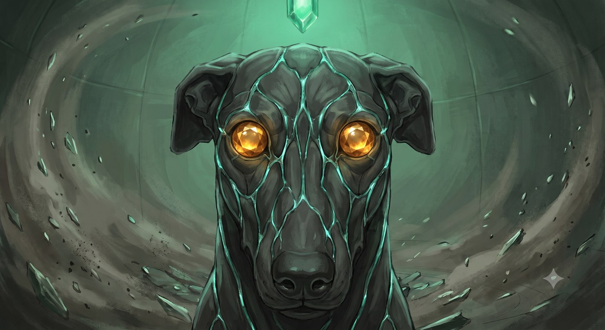

La Leggenda del Fedele
«Era il tuo cane da galoppo, ed è morto prima di te. Nel tuo viaggio fra i morti il suo ricordo è caduto nella pietra, e la pietra se l'è tenuto. Quando la montagna ha ceduto lo Smeraldo, la polvere del guardiano sconfitto ha preso la sua forma. A Moradin avevi risposto che doveva proteggere te. Lo fa. Non gliel'hai mai insegnato.»
Com'è fatto.
Un cane da galoppo di mithral intrecciato a roccia scura, come muscolo a osso, con vene di luce verde fra le placche. Occhi di topazio. Non abbaia più: quando vuole dirti qualcosa fa un click, come una pietra che si assesta in un muro a secco.
Tipo: bestia magica (animale potenziato, sottotipo Terra) · Taglia: Media · Allineamento: Neutrale Buono
Legato a: Hella, e al terzo seme della Collana · Prove di Risonanza: 1
Dadi Vita: 12d10+36 · 102 pf · Iniziativa +2 · Velocità 12 m, scavare 3 m in terra morbida
Le statistiche
| Voce | Valore |
|---|
| CA | 21 (+2 DES, +9 naturale) · contatto 12 · colto alla sprovvista 19 |
| Attacco base / Lotta | +9 / +15 |
| Attacco | morso +15 mischia (2d6+6, 19-20/×2) |
| Attacco completo | morso +15 (2d6+6) e 2 artigli +13 (1d4+3) |
| Spazio / portata | 1,5 m / 1,5 m |
| Tiri salvezza | Tempra +11 · Riflessi +10 · Volontà +6 |
| Caratteristiche | FOR 22 · DES 15 · COS 17 · INT 4 · SAG 14 · CAR 8 |
Quello che è
Straordinario (Str) | RD 5/adamantio | Resistenza al freddo 10
Regge a tutto tranne l'adamantio.
Soprannaturale (Sop) | Sempre attivo
I suoi attacchi superano la RD come armi magiche, e il morso conta come adamantio.
Straordinario (Str) | Sempre attivo | Solo a terra
Sente chi si muove a terra entro 18 m, anche al buio, anche invisibile. Non chi vola. Il click vuol dire: sotto.
Straordinario (Str) | Charme · compulsione · paralisi · sonno · pietrificazione · veleno
L'acido gli fa +50%: la pietra si corrode.
◆ Il legame ◆
Straordinario (Str) | Volontà CD 18
Nessuna magia lo mette contro di te. Chi prova a charmarlo o dominarlo deve superare Volontà CD 18, o perde l'incantesimo.
Soprannaturale (Sop) | Ordini col pensiero
Gli dai ordini col pensiero entro 18 m, senza parlare. Oltre, fa l'ultima cosa che gli hai chiesto, o ti protegge.
Soprannaturale (Sop) | Finché uno dei due ha pietra sotto i piedi
Sente il tuo umore, e ti manda il suo: pericolo, calma, fretta. Viaggia nel Sogno della Terra.
Come si gioca
Sta sempre con te. Non serve evocarlo.
Se non gli dai ordini, ti protegge: si mette fra te e il pericolo, e chi vuole arrivarti addosso deve passare da lui o girargli intorno.
Non è fatto per combattere da solo. È uno scudo che morde: rende a fianco di Thorik o di Tordek, per prendere un nemico ai fianchi, o quando afferra e tiene fermo qualcuno mentre gli altri lavorano.
Se viene distrutto torna polvere, e la polvere torna nel terzo seme. Con una carica dell'Evocazione dei Guardiani lo richiami subito, per un'ora. All'alba è di nuovo intero, e resta. Se l'Evocazione è spenta, perché hai chiamato i due Treant insieme, non puoi richiamarlo subito: torna all'alba.
Come cresce
| Prove | Cosa cambia |
|---|
| 1 ✓ | 12 DV, il morso passa a 2d6+6. È già successa: è il motivo per cui è così. |
| 2 ☐ | RD 8/adamantio · percezione tellurica 27 m |
| 3 ☐ | diventa Grande: +4 FOR, −2 DES, +4 armatura naturale; nuovo attacco, schianto 2d6+9 |
| 4 ☐ | immune all'acido; il morso conta anche come ferro freddo |
| 5 ☐ | immune a tutti i danni da energia; +2 SAG, e capisce le tue parole senza ambiguità |
Durik non cresce con i tuoi livelli. Cresce quando il legame fra voi si mette alla prova. Il DM te lo dice quando succede, di solito dopo.
Legato ad Hella al risveglio · data: ______________________
Distrutto e richiamato: ______________________
_______________________________________________